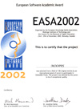

Implementation Challenges
TSP-Challenge on optil.io
-
1st rank (since September 2018-...) in the ongoing competition on the Traveling Salesman Problem
The definition of the TSP is as classical as it gets: a symmetric graph in an Euclidean plane with at most 2500 nodes.
This is an open competition with no deadline, which means that you can submit your code at any time and beat my contribution. Please make an effort in improving the state-of-the-art. Once you get close or surpass my results: please let me know. I would be most interested in learning about your work. Maybe we can collaborate at some point.
Parameterized Algorithms and Computational Experiments Challenge PACE 2024
(prices awarded in September 2024 in London, United Kingdom)
Optimization problem: One-sided crossing minimization.
- 3rd winner/ place in the Heuristic Track.
- My source-code on
 github.com.
github.com. - My source-code on zenodo.org: .
Parameterized Algorithms and Computational Experiments Challenge PACE 2021
(prices awarded in September 2021 in Lisbon, Portugal)
Optimization problem: Cluster Editing.
- 4th place in the Heuristic Track.
- The slides of the award ceremony are available here.
- My source-code on zenodo.org:
 .
.

VeRoLog Solver Challenge 2019
(finals held in June 2019 in Seville, Spain)
Optimization problem: distribution and subsequent installation of equipment, such as vending machines.
- 2nd winner/ place in the restricted-resources challenge.
- 24 (out of 25) best-known-solutions in the all-time-best challenge.

Kaggle "Traveling Santa Challenge – Prime Paths"
(held from November 2018–January 2019)
Optimization problem: a very large scale Traveling Salesman Problem with an additional cost function, placing certain nodes in particular positions.
- 32 (out of 1874), i.e. a silver medal, with +0.09% deviation from the winning solution.

Parameterized Algorithms and Computational Experiments Challenge PACE 2018
(prices awarded in August 2018 in Helsinki, Finland)
Optimization problem: the Steiner Tree Problem in an (undirected) graph.
- 3rd winner/ place in Track C (Heuristics Track).
- A report on the competition is available here.
- My source code and a technical description of my approach (Mendeley Data):
 10.17632/yf9vpkgwdr.1
10.17632/yf9vpkgwdr.1
Kaggle "Santa Gift Matching Challenge"
(held from December 2017–January 2018)
- 167 (out of 428), with +0.1% deviation from the winning solution
VeRoLog Solver Challenge 2016-2017
(finals held in July 2017 in Amsterdam, the Netherlands)
Optimization problem: multi-period, multi-product pickup and delivery problem with inventory constraints (scarce equipment) and possible transfers (reuse of equipment).
- Winner of the restricted-resources challenge.
- 22 (out of 25) best-known-solutions in the all-time-best-challenge.
ACP Challenge 2016
(part of the 22nd International Conference on Principles and Practice of Constraint Programming, September 2016, Toulouse, France)
Optimization problem: scheduling of torpedoes in steel production.
- 3rd winner/ place
- A first conference article: 10.1007/978-3-658-17580-1_4
- Journal paper (joint work with the winning team): 10.1613/jair.1.11303
Kaggle "Santa's Stolen Sleigh" Problem
(held from December 2015–January 2016)
Optimization problem: capacitated vehicle routing problem on a sphere with a novel objective function, large graph with 100,000 nodes.
- 56th (out of 1127 teams), i.e. a silver medal, with +0.38% deviation from the winning solution
VeRoLog Solver Challenge 2015
(finals held in June 2015 in Vienna, Austria)
Optimization problem: coach trip with shuttle service problem.
- Winner
- Journal paper: 10.1002/net.21733
- Source code: 10.17632/662mtv6sd8.1

EURO/ROADEF Challenge 2014
(finals held in July 2014 in Barcelona, Spain)
Optimization problem: operative routing and scheduling of rolling stock in train networks.
- Winner of the qualification, and 3rd overall winner/ place
- Journal paper: 10.1007/s10479-017-2501-8
- Source code: 10.17632/nc642wfw2k.1

VeRoLog Solver Challenge 2014
(finals held in June 2014 in Oslo, Norway)
Optimization problem: swap-body vehicle routing.
- 3rd winner/ place
- Conference paper: 10.1007/978-3-319-11421-7_2
- Journal paper (also includes results on some other test instances): 10.1016/j.ejor.2017.04.046
MISTA 2013 Challenge
(finals held in August 2013 in Gent, Belgium)
Optimization problem: multi-mode resource-constrained multi-project scheduling.
- 1st rank in the qualification, and 2nd winner/ place in the finals
- Conference paper:
 1310.0602
1310.0602 - Journal paper (also includes results on many other test instances): 10.1016/j.ejor.2016.07.024
- Source code: 10.17632/cw95t56hjv.1
Kaggle "Traveling Santa" Problem competition
(held from December 2012–January, 2013)
Optimization problem: finding two edge-disjoint minimal paths in a large graph with 150,000 nodes.
- 19th (out of 355 teams), i.e. a silver medal, with +0.7% deviation from the best known solution
Nurse Rostering Competition
(finals held in August 2010 in Belfast, Northern Ireland)
Optimization problem: building a roster for nurses in hospitals (=a timetabling problem).
- Conference paper: 10.1007/978-3-642-20009-0_35

International Timetabling Competition ITC 2007
(finals held in August 2008 in Montréal, Canada)
Optimization problem: curriculum based course timetabling.
- Finalist/ 4th place (= one of the top 5 contributions worldwide)
- Journal paper: 10.1007/s10479-010-0703-4

European Academic Software Award 2002
(finals held in November 2002 in Ronneby, Sweden)
- Winner
- Conference paper: 10.1007/978-0-387-34747-9_51
- Journal paper: 10.1016/j.cie.2011.05.013
European Academic Software Award 1998
(finals held in September 1998 in Oxford (Keble College), UK)
- Finalist
- Conference paper: arxiv.org/abs/0809.0416